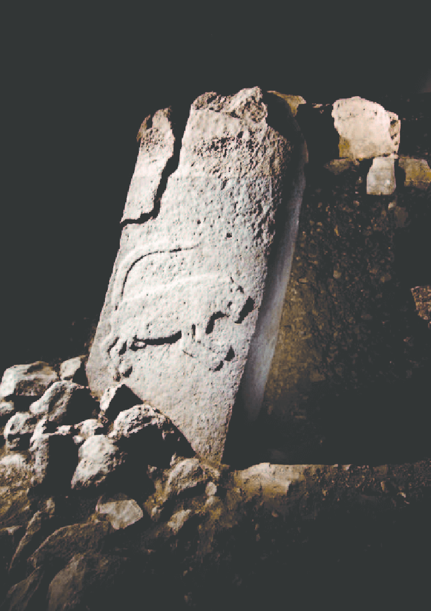
Pillar 51 - Recent Research 2013/14: Insights into a new Enclosure at Göbekli Tepe - Scientific Figure on ResearchGate. Available from: Here.
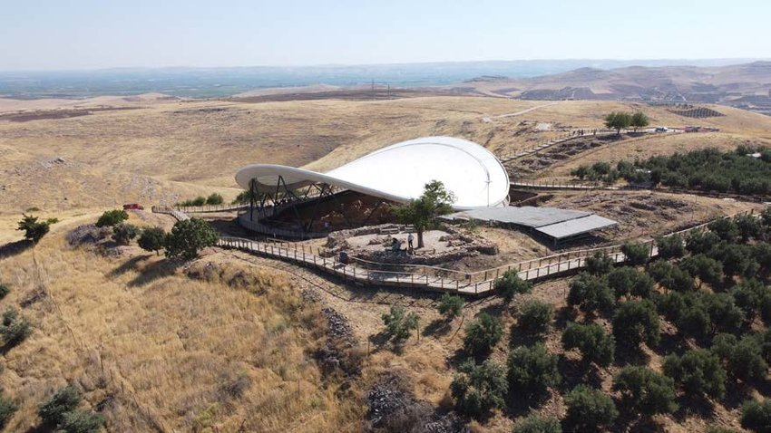
The site futuristic shelter - A Haunted Landscape and Its Drained Souls: The Last Rush to Heritage and Archaeology in Turkey - Scientific Figure on ResearchGate. Available from: Here.
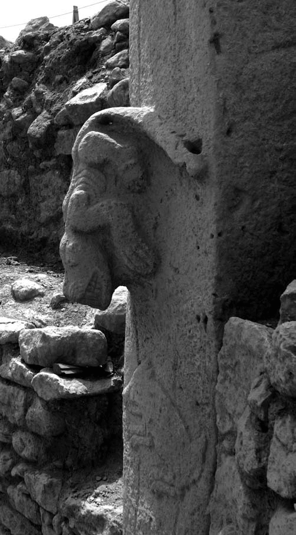
Pillar 27 Lion - Symbols of Power - Symbols of Crisis? A Psycho-Social Approach to Early Neolithic Symbol Systems - Scientific Figure on ResearchGate. Available from: Here.
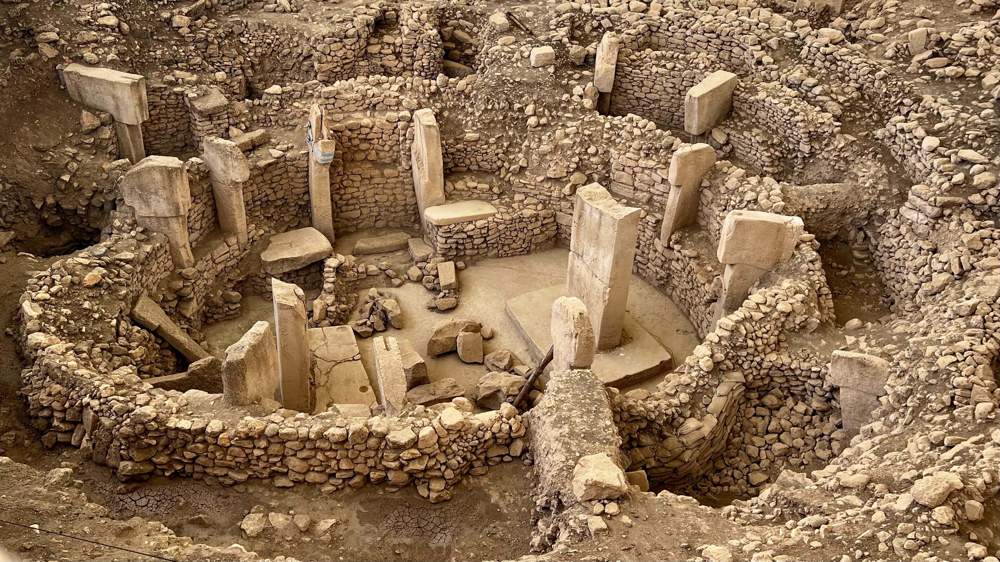
Adobe Stock Images
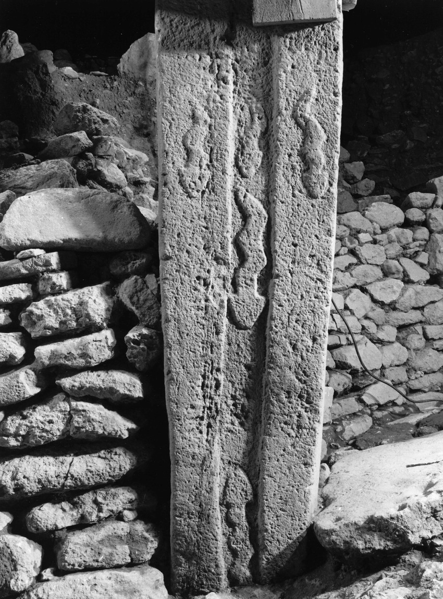
Viper Pillar - PETERS J., DRIESCH VON DEN A. and HELMER D. 2005 - The Upper Euphrates-Tigris Basin - Scientific Figure on ResearchGate. Available from: Here.
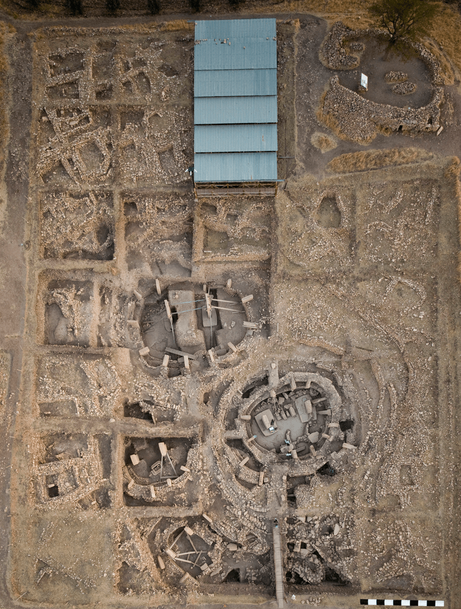
Aerial View - German Archaeological Institute, photo E. Kücük., CC BY 2.5, via Wikimedia Commons- Addendum 2: Megafauna Extinction Events Update to the Thunderbolt Extinction Model; the Surprising truth of the Younger Dryas Event that Changes Everything - Scientific Figure on ResearchGate.
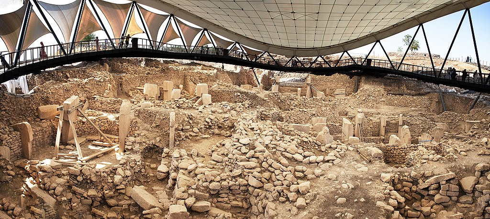
Panorama - Spica-Vega Photo Arts (Banu Nazikcan), CC BY-SA 4.0, via Wikimedia Commonswolf pillar - Zhengan, CC BY-SA 4.0, via Wikimedia Commons
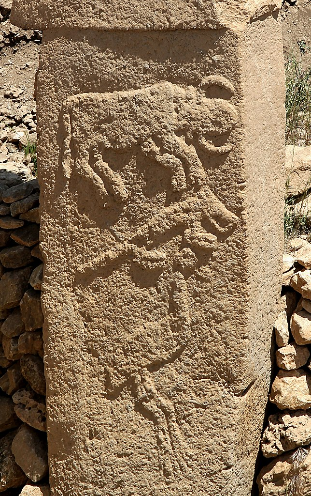
Animals Pillar_small - Klaus-Peter Simon, CC BY-SA 3.0, via Wikimedia CommonsBuilding D replica - Cobija, CC BY-SA 4.0, via Wikimedia Commons
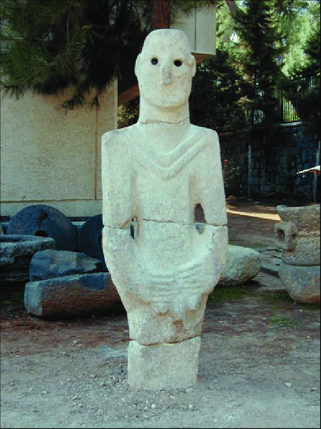
Urfa Statue - Göbekli Tepe - The Stone Age Sanctuaries. New results of ongoing excavations with a special focus on sculptures and high reliefs - Scientific Figure on ResearchGate. Available from: Here.Pillar 43 - A “Curious and Sometimes a Trifle Macabre Artistry” - Scientific Figure on ResearchGate. Available from: Here.vultures head stone pillar - Klaus-Peter Simon, CC BY-SA 3.0, via Wikimedia Commons
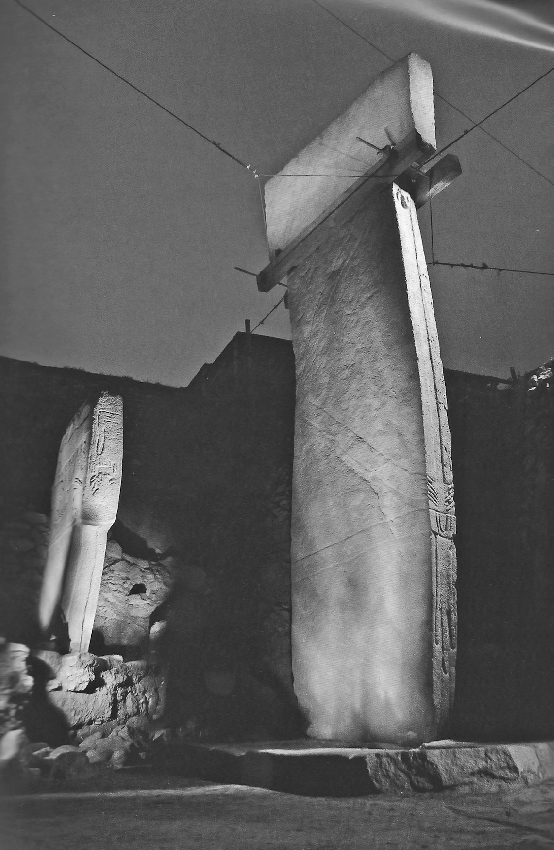
Pillar 31 - Architecture and imagery in the early neolithic of South-West Asia: Framing rituals, stabilising meanings - Scientific Figure on ResearchGate. Available from: Here.
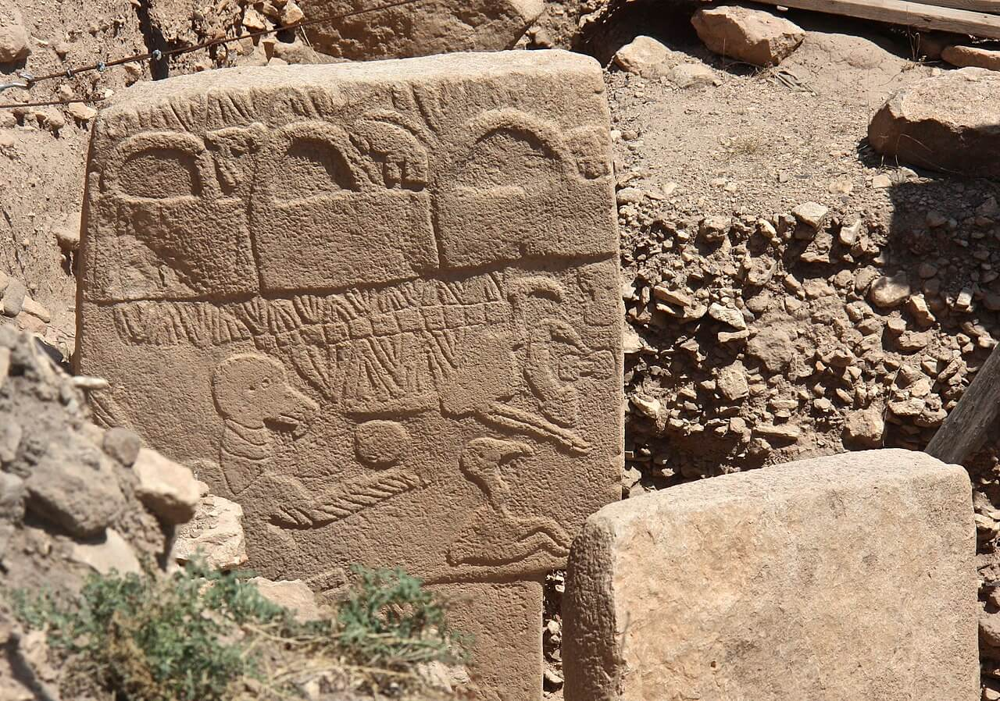
Vulture/bag pillar - Sue Fleckney, CC BY-SA 2.0, via Wikimedia CommonsAn of excavations 2012 - The role of cult and feasting in the emergence of Neolithic communities. New evidence from Göbekli Tepe, south-eastern Turkey - Scientific Figure on ResearchGate. Available from: Here.Adobe Stock Images